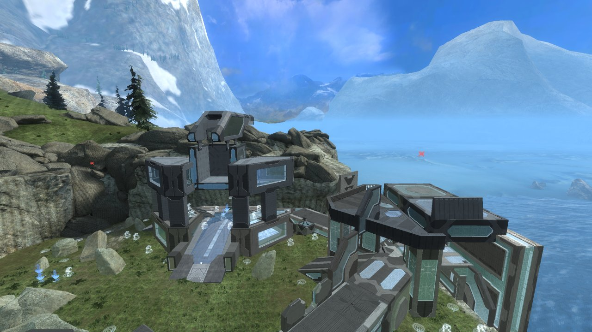

Headless / CLI
The same executable can render a map to a PNG with no window at all, run script files, and print information about your installation. Everything here works on Windows and Linux; on Windows the console window is hidden, so run it from a terminal to see the output.
Single screenshot: HMS_SHOT
Setting HMS_SHOT to an output path makes the app render one frame and exit instead of opening a window:
# Linux
HMS_MAP=forge_halo HMS_CAM="-80,120,110,-60,-25" HMS_SHOT=forge.png HMS_SHOT_SIZE=1280x720 ./hms-app
# Windows (cmd)
set HMS_MAP=forge_halo
set HMS_CAM=-80,120,110,-60,-25
set HMS_SHOT=forge.png
set HMS_SHOT_SIZE=1280x720
hms-app.exe
# Windows (PowerShell)
$env:HMS_MAP="forge_halo"; $env:HMS_CAM="-80,120,110,-60,-25"; $env:HMS_SHOT="forge.png"; $env:HMS_SHOT_SIZE="1280x720"; .\hms-app.exe| Variable | Meaning |
|---|---|
HMS_SHOT | Output PNG path (required to enter headless mode). A <name>.png.log with scene statistics is written next to it. |
HMS_MAP | Which map: the exact file stem (45_aftship), a substring, or a full path. Case-insensitive. Unset = the first detected map. |
HMS_SHOT_SIZE | WxH, default 1600x900. |
HMS_CAM | x,y,z,yaw,pitch — position in world units, yaw and pitch in degrees. Yaw is measured around the up axis (0° looks along +X, 90° along +Y); positive pitch looks up. Exactly five numbers, otherwise it is ignored and the map is auto-framed. |
HMS_MVAR | Path to a .mvar whose objects are placed before rendering (see below). |
The process prints progress and finally wrote forge.png (1280x720); the exit code is 0 on success, and HMS_SHOT failed: … with exit code 1 otherwise. Two warm-up frames are always rendered first so the auto-exposure meter settles the way it does in the GUI.
Camera and framing
Without HMS_CAM the camera is auto-framed on the map's Forge objects (the playable area), or on the whole level if there are none. The framing can be adjusted:
| Variable | Meaning |
|---|---|
HMS_VIEW | overview (default, a 3/4 view from above), top, or front. |
HMS_DIST | Multiplier on the auto-framed distance (0.5 = twice as close). |
HMS_FOV | Vertical field of view in degrees. |
HMS_SPAWNCAM=1 | Use the map's spawn-point camera (the pose the GUI uses when it opens a map) instead of framing. |
HMS_STANDOFF=<wu> | Push the camera out of any geometry closer than this distance. |
HMS_TIME=<seconds> | Animation time for the frame (water, scrolling textures, particles). |
The easiest way to find a good camera is to fly there in the GUI and copy the numbers from the camera readout (or run camera get in the script console); the GUI's F12 screenshot also writes the pose to captures/viewer_last.cam.
Rendering a variant
HMS_MAP=forge_halo \
HMS_MVAR="<MCC>/haloreach/map_variants/hr_forgeWorld_asylum.mvar" \
HMS_CAM="62,208,68,0,-10" HMS_SHOT=asylum.png HMS_SHOT_SIZE=1280x720 ./hms-appHMS_MAP must be the variant's base map (the headless renderer does not switch maps by itself). The log reports HMS_MVAR: 458 variant objects, 458 placed and lists any objects it could not resolve; HMS_MVAR_LIST=1 prints every object with its slot, palette indices, position and team. For Halo 4 maps HMS_MVAR accepts Halo 4 variants only.

Batch rendering with scripts
HMS_SHOT renders one frame per process. For several shots, use the script runner, which loads maps and variants synchronously and can loop:
# shots.hscr
foreach variants all as $v
loadvariant $v
camera frame
screenshot out/$stem.png 1280x720
end./hms-app --script shots.hscr # or: hms-app.exe --exec "loadmap 45_aftship" "camera frame" "screenshot zealot.png 1920x1080"list variants all (and foreach variants) enumerate the mvars/ folder next to the executable plus any folders in HMS_MVAR_DIRS (;-separated, searched recursively). HMS_SHOT_SIZE sets the initial render size for the headless script runner as well; individual screenshot commands can override it. Every command is documented in the Scripting reference.
--dump-maps and other flags
hms-app --dump-mapsPrints one line per detected map — map id, whether it is a Workshop ("modded") map, the game, the scenario stem, the file name and the full path — followed by totals and the variant folders that were found. Use it to check what the map picker will show and to get the exact stems for HMS_MAP / loadmap.
3006 modded=0 game=reach forge_halo [forge_halo.map] <MCC>/haloreach/maps/forge_halo.map
1040 modded=0 game=reach 45_aftship [45_aftship.map] <MCC>/haloreach/maps/45_aftship.map
- modded=1 game=reach rain_land [rain_land.map] <library>/steamapps/workshop/content/976730/<id>/maps/rain_land.map
10256 modded=0 game=halo4 ca_forge_ravine [ca_forge_ravine.map] <MCC>/halo4/maps/ca_forge_ravine.map| Flag | Purpose |
|---|---|
--script <file> | Run a script file headless. |
--exec "<commands>" | Run the given commands headless. |
--dump-maps | List detected maps and variant folders. |
--dump-mvar <file…> | Print the header, labels and object table of one or more Reach variants (a way to inspect a file without the GUI). |
--dump-h4-mvar <file…> | The same for Halo 4 variants. |
--mvar-delete <in> <out> <slot,slot,…> | Copy a variant with the listed object slots removed. Never overwrites the input. |
--dump-palette <map> [--variants] | Print a map's Forge palette (folder / item indices and names), optionally with the per-item variants. |
--resolve-mvar <map> <mvar> [--all] | Show how each object in a variant resolves against a map's palette — useful when the GUI reports unresolved objects. |
Further flags (--bench-mvar, --dump-model, --dump-mask, --dump-parts) exist for development and are not documented here.
Environment variables
| Variable | Applies to | Meaning |
|---|---|---|
HMS_MCC_DIRS | GUI + headless | Extra MCC / game / maps folders, ;-separated. |
HMS_MCC_LOCALFILES | GUI | Extra MCC\LocalFiles roots for the variant browser's quick links. |
HMS_MVAR_DIRS | Scripts | Folders for list variants / foreach variants. |
HMS_MAP | GUI + headless | Map to load at start (GUI) or render (headless). |
HMS_SHOT, HMS_SHOT_SIZE, HMS_CAM, HMS_MVAR, HMS_MVAR_LIST, HMS_VIEW, HMS_DIST, HMS_FOV, HMS_SPAWNCAM, HMS_STANDOFF, HMS_TIME | Headless | See above. |
HMS_AUTOSHOT=<png> | GUI | Save a screenshot automatically a few frames after the map has loaded. |
HMS_IMPORT=<file.obj|.glb> | GUI | Import a reference mesh at start (same as Tools ▸ Import geometry). |
HMS_CMD_PORT | GUI | Port of the script command server (default 47800; 0 disables). |
HMS_SOFTWARE_GPU=1 | GUI + headless | Force the CPU software rasteriser. |
HMS_NOFOG=1, HMS_NODECALS=1 | GUI + headless | Disable fog / decals. |
HMS_H4_LIGHTMAP=0, HMS_H4_SHADING=0, HMS_H4_NOTEX, HMS_H4_NOOBJ, HMS_H4_NOSKY | Halo 4 | Halo 4 fallbacks — see Halo 4. |
Many more HMS_* variables exist as rendering diagnostics for development; they are print-only or change the image in ways that are not useful for normal use and are intentionally undocumented.
GPU notes
Headless rendering still needs a graphics adapter (Vulkan on Linux, DirectX 12 / Vulkan on Windows). If no hardware adapter is available the software rasteriser is used (lavapipe / vulkan-swrast must be installed on Linux; WARP is built into Windows) — expect a minute or more per frame on large maps. The native library (HaloMapStudioDLL.dll / libhalomapstudio.so) must be next to the executable for Reach maps; Halo 4 maps are parsed without it.